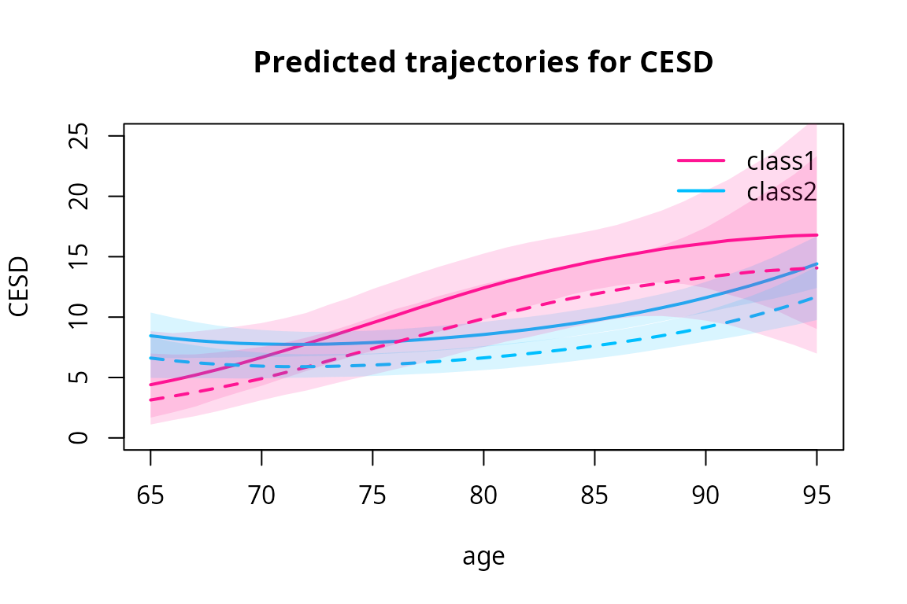
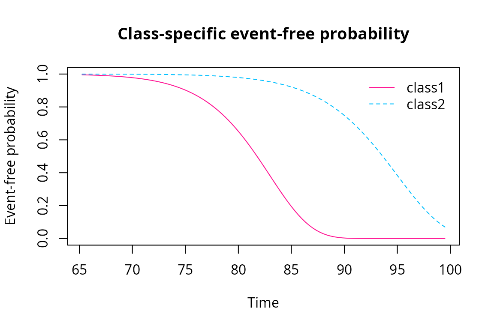

Accounting for latent class assignment uncertainty in subsequent analyses
Cecile Proust-Lima, Maris Dussartre, Viviane Philipps
Source:../vignettes/secondary_model_with_externVar.Rmd
secondary_model_with_externVar.RmdIntroduction
This vignette addresses the case where the latent class structure stemmed from a latent class model estimated with lcmm, hlme, multlcmm, Jointlcmm or mpjlcmm is to be used in secondary regressions. Please refer to vignettes hlme, Jointlcmm, mpjlcmm for description of latent class model estimation.
In the following, we call the “primary model” the latent class model from which the latent class structure is built, “external” variables, the variables not used in the primary model, and “secondary model” the subsequent regression model that:
explains the latent class structure using external predictors, in a multinomial logistic regression;
explains external outcomes using the latent class structure as one of the predictors. Regression currently handled in the package are: linear regression, all the mixed-effect regressions of the package, and survival proportional hazard model.
The statistical issue with the secondary use of latent class structures is that the latent class structure is latent, and that the posterior classification obtained from an estimated latent class model is an estimation with error. In addition to the statistical fluctuations to account for in the variance, the misclassification may also bias naive use of the posterior classification (Bakk & Kuha 2021). To account for the inherent misclassification (or error of classification) in a latent class model, different techniques exist (see Bakk & Kuha (2021) for a review).
Secondary modeling approaches that account for misclassification
In the lcmm package, we implemented in the function externVar two methods for estimating secondary models while accounting for the error of classification: a conditional regression on the truth, called “conditional” (Vermunt et al. 2010, Bakk et al. 2013), and a two-stage estimation of the joint likelihood, called “twoStageJoint” (Xue & Bandeen-Roche 2002, Bakk & Kuha 2018, Proust-Lima et al. 2023). These methods have been validated in simulations (paper to come).
The conditional regression on the truth
The conditional regression on the truth uses the Bayes theorem to translate the secondary regression according to the posterior classification into a secondary regression according to the true latent class structure. This is done through the introduction of the probability of the latent class structure given the assignment (call the misclassification probability) when using an external outcome and the probability of the posterior assignment given the true latent class structure when using a external predictors. This trick allows to estimate parameters that do not suffer from the misclassification anymore.
The variance of the secondary model estimates still need to account for the multiple step estimation (1. primary latent class model, 2. secondary regression) (Bakk et al., 2014). This is currently achieved by parametric bootstrap method in externVar.
The two-stage estimation using the joint likelihood
With an external outcome, the two-stage method relies on the joint likelihood of the primary latent class model and of the secondary model. The estimates obtained from the primary model are entered in the joint likelihood as input, and the joint likelihood is maximized on the parameters of the secondary model only.
With an external predictor, the two-stage method relies on the likelihood of the primary latent class model in which the latent class probability model is taken from the secondary model. As for an external outcome, estimates obtained from the primary model are entered in the likelihood as input, except those for the class-membership. The likelihood is then maximized according to the parameters of this secondary class-membership model.
As for the conditional regression, the variance of the secondary model estimates still need to account for the multiple step estimation (1. primary latent class model, 2. secondary regression) (Bakk et al. 2018, Proust-Lima et al. 2023). This can be achieved by parametric bootstrap method or directly by computing the Hessian from the joint likelihood. Both approaches are implemented. The default method is “Hessian”.
Remarks for the secondary models:
The secondary models may be estimated on the exact same population as the primary model, on a sub-population or on another independent population. However, in any case, the data used for the secondary model should contain all the variables used in the primary model in addition to those of the secondary model.
Example on paquid DataSet
Primary model
For all the methods, we first need to estimate a primary latent class model from which the latent class structure will be built. We use the same example as in the vignette: “How to estimate a latent class mixed model using hlme function”. This model is a latent class linear mixed model to identify distinct profiles of trajectory of normalized MMSE over age, adjusted for CEP (common effect across classes).
estimation
library(NormPsy)
paquid$normMMSE <- normMMSE(paquid$MMSE)
paquid$age65 <- (paquid$age - 65) / 10
PrimModel <- hlme(normMMSE ~ age65 + I(age65^2) + CEP,
random =~ age65 + I(age65^2),
subject = 'ID',
data = paquid,
ng = 2,
mixture =~ age65 + I(age65^2),
B = c(0, 64, 63, 18, 3, -16, -4, 14, 221, -228, 429, 62, -121, 36, 10))brief description of the results
datnew <- data.frame(age = seq(65, 95, 1))
datnew$age65 <- (datnew$age - 65)/10
datnew$CEP <- 0
p <- predictY(PrimModel, datnew, draws=T)
plot(p, shades=TRUE, col=c("deeppink", "deepskyblue"), lty=1, lwd=2)The posterior classification finds a small class (12.4% of the sample) characterized by a substantial decline over age and a large class (87.6% of the sample) with a relatively stable trajectory over age. The classification is correct: mean probability of 80% and 87%, for those classified in 1 and 2, respectively.
postprob(PrimModel)
#>
#> Posterior classification:
#> class1 class2
#> N 62.0 438.0
#> % 12.4 87.6
#>
#> Posterior classification table:
#> --> mean of posterior probabilities in each class
#> prob1 prob2
#> class1 0.8054 0.1946
#> class2 0.1270 0.8730
#>
#> Posterior probabilities above a threshold (%):
#> class1 class2
#> prob>0.7 61.29 90.18
#> prob>0.8 58.06 69.18
#> prob>0.9 43.55 47.95
#> Secondary model for longitudinal external outcome: CES-D
In this example, we want to assess the profiles of trajectory of depressive symptomatology (CES-D scale for Center for Epidemiologic Studies - Depression) in the two classes identified on MMSE.
CES-D is repeated at each occasion, we thus need a linear mixed model. The specification is the same as in all the other functions of the package. Given the strong asymmetry in the distribution of CES-D (see vignette Pre-normalizing a dependent variable using lcmm), we use a curvilinear mixed model with a normalizing link function approximated by splines (i.e., same as lcmm function).
We specify a quadratic model and adjust for sex (male). The latent class predictor is specified through “mixture” argument.
For this example, we apply the secondary model on the same sample “paquid”.
with two-stage approach
CESD2stage = externVar(PrimModel,
fixed = CESD ~ age65 + I(age65^2) + male,
random = ~ age65 + I(age65^2),
subject = "ID",
data = paquid,
mixture =~ age65 + I(age65^2),
method = "twoStageJoint",
link = "3-quant-splines")
sum2st <- summary(CESD2stage)
#> Secondary linear mixed model
#> fitted by maximum likelihood method
#> ** Total parameter variance estimated using the Hessian of the joint likelihood **
#>
#>
#> externVar(model = PrimModel, fixed = CESD ~ age65 + I(age65^2) +
#> male, mixture = ~age65 + I(age65^2), random = ~age65 + I(age65^2),
#> subject = "ID", link = "3-quant-splines", data = paquid,
#> method = "twoStageJoint")
#>
#> Statistical Model:
#> Dataset: paquid
#> Number of subjects: 500
#> Number of observations: 2104
#> Number of observations deleted: 146
#> Number of latent classes: 2
#> Number of parameters: 17
#> Link function: Quadratic I-splines with nodes
#> 0 6 52
#>
#> Iteration process:
#> Convergence criteria satisfied
#> Number of iterations: 25
#> Convergence criteria: parameters= 1.6e-07
#> : likelihood= 7.3e-08
#> : second derivatives= 3e-13
#>
#> Goodness-of-fit statistics:
#> maximum log-likelihood: -6418.8
#> AIC: 12871.59
#> BIC: 12943.24
#>
#> Discrete posterior log-likelihood: -6320.31
#> Discrete AIC: 12674.61
#>
#> Mean discrete AIC per subject: 12.6746
#> Mean UACV per subject: 12.6406
#> Mean discrete LL per subject: -12.6406
#>
#> Maximum Likelihood Estimates:
#>
#> Fixed effects in the longitudinal model:
#>
#> coef Se Wald p-value
#> intercept class1 (not estimated) 0
#> intercept class2 1.06287 0.63470 1.675 0.09401
#> age65 class1 1.67967 0.80282 2.092 0.03642
#> age65 class2 -0.15996 0.23531 -0.680 0.49663
#> I(age65^2) class1 -0.27413 0.27750 -0.988 0.32321
#> I(age65^2) class2 0.18294 0.06943 2.635 0.00841
#> male -0.42171 0.11249 -3.749 0.00018
#>
#>
#> Variance-covariance matrix of the random-effects:
#> intercept age65 I(age65^2)
#> intercept 2.04087
#> age65 -0.91475 1.36808
#> I(age65^2) 0.11088 -0.31057 0.08149
#>
#> Residual standard error (not estimated) = 1
#>
#> Parameters of the link function:
#>
#> coef Se Wald p-value
#> I-splines1 -1.18192 0.54471 -2.170 0.03002
#> I-splines2 1.30506 0.02327 56.084 0.00000
#> I-splines3 1.77459 0.04239 41.859 0.00000
#> I-splines4 0.94043 0.17185 5.472 0.00000
#> I-splines5 1.43204 0.16928 8.460 0.00000The secondary model summary is very similar to any other summary of lcmm package. It includes information on the estimation procedure, and the estimates obtained. By default, the variance of the parameters are estimated by the Hessian.
Main usual postfit functions of the package apply to externVar. For instance, the mean predicted trajectories can be computed and plotted:
data_pred <- data.frame(age = seq(65, 95, 1))
data_pred$age65 <- (data_pred$age - 65) / 10
data_pred$male <- 0
predIC0 <- predictY(CESD2stage, data_pred, var.time = "age", draws=TRUE)
data_pred$male <- 1
predIC1 <- predictY(CESD2stage, data_pred, var.time = "age", draws=TRUE)
plot(predIC0, col=c("deeppink", "deepskyblue"), lty=1, lwd=2, ylab="CESD", main="Predicted trajectories for CESD", ylim=c(0, 25), shades=TRUE)
plot(predIC1, col=c("deeppink","deepskyblue"), lty=2, lwd=2, ylab="CESD", main="Predicted trajectories for CESD", legend=NULL, ylim=c(0,25), shades=TRUE, add=TRUE)
In the large class 2, the CESD remains relatively constant then increases slowly after 80 years old while in small class 1, CESD is lower at 65 years old but increases constantly over the age span.
CESD model fit can be evaluated the same way as any model in lcmm package:
plot(CESD2stage, cex.main=0.8)
plot(CESD2stage, which="fit", var.time="age", marg=FALSE, shades = TRUE, col=c("deeppink", "deepskyblue"), ylim=c(0, 2.5))These graphs suggest a good fit to the data.
with conditional regression
This procedure is much longer as based on parametric bootstrap for the variance estimation. The default number of replicates is 200.
CESDCond = externVar(PrimModel,
fixed = CESD ~ age65 + I(age65^2) + male,
random = ~ age65 + I(age65^2),
subject = "ID",
data = paquid,
mixture =~ age65 + I(age65^2),
method = "conditional",
link = "3-quant-splines")To limit the computation time, starting values close to the optimum can be rapidly obtained by estimating the model with the uncorrected variance varest=“none”, and then use these estimates as initial values when running the parametric bootstrap:
CESDCondNone <- externVar(PrimModel,
fixed = CESD ~ age65 + I(age65^2) + male,
random = ~ age65 + I(age65^2),
subject = "ID",
data = paquid,
mixture =~ age65 + I(age65^2),
method = "conditional",
link = "3-quant-splines",
varest="none")
CESDCondPBoot <- externVar(PrimModel,
fixed = CESD ~ age65 + I(age65^2) + male,
random = ~ age65 + I(age65^2),
subject = "ID",
data = paquid,
mixture =~ age65 + I(age65^2),
method = "conditional",
link = "3-quant-splines",
B=CESDCondNone$best)
summary(CESDCond)
#> Secondary linear mixed model
#> fitted by maximum likelihood method
#> ** Total parameter variance estimated using parametric bootstrap **
#>
#>
#> externVar(model = PrimModel, fixed = CESD ~ age65 + I(age65^2) +
#> male, mixture = ~age65 + I(age65^2), random = ~age65 + I(age65^2),
#> subject = "ID", link = "3-quant-splines", data = paquid,
#> method = "conditional")
#>
#> Statistical Model:
#> Dataset: paquid
#> Number of subjects: 500
#> Number of observations: 2104
#> Number of observations deleted: 146
#> Number of latent classes: 2
#> Number of parameters: 17
#> Link function: Quadratic I-splines with nodes
#> 0 6 52
#>
#> Iteration process:
#> Convergence criteria satisfied
#> Proportion of convergence on bootstrap iterations (%)= 99.5
#>
#> Goodness-of-fit statistics:
#> maximum log-likelihood: -6419.02
#> AIC: 12862.54
#> BIC: 12934.18
#>
#> Discrete posterior log-likelihood: -6315.97
#> Discrete AIC: 12665.94
#>
#> Mean discrete AIC per subject: 12.6659
#> Mean UACV per subject: 12.6686
#> Mean discrete LL per subject: -12.6319
#>
#> Maximum Likelihood Estimates:
#>
#> Fixed effects in the longitudinal model:
#>
#> coef Se Wald p-value
#> intercept class1 (not estimated) 0
#> intercept class2 0.78323 0.73518 1.065 0.28672
#> age65 class1 1.15513 0.99941 1.156 0.24776
#> age65 class2 -0.02754 0.29245 -0.094 0.92497
#> I(age65^2) class1 -0.09971 0.35363 -0.282 0.77797
#> I(age65^2) class2 0.13347 0.09503 1.404 0.16018
#> male -0.42379 0.11375 -3.726 0.00019
#>
#>
#> Variance-covariance matrix of the random-effects:
#> intercept age65 I(age65^2)
#> intercept 1.64210
#> age65 -0.83078 1.39116
#> I(age65^2) 0.12253 -0.33125 0.08384
#>
#> Residual standard error (not estimated) = 1
#>
#> Parameters of the link function:
#>
#> coef Se Wald p-value
#> I-splines1 -1.40773 0.61731 -2.280 0.02258
#> I-splines2 1.30413 0.02327 56.042 0.00000
#> I-splines3 1.77263 0.04253 41.678 0.00000
#> I-splines4 0.94140 0.17275 5.450 0.00000
#> I-splines5 1.44412 0.16933 8.528 0.00000The two methods (two-stage -plain, conditional -dashed) provide very close predicted trajectories of CESD
data_pred$male <- 0
predIC0Cond <- predictY(CESDCond, data_pred, var.time = "age", draws=TRUE)
data_pred$male <- 1
predIC1Cond <- predictY(CESDCond, data_pred, var.time = "age", draws=TRUE)
par(mfrow=c(1,2))
plot(predIC0, col=c("deeppink", "deepskyblue"), lty=1, lwd=2, ylab="CESD", main="Predicted CESD in men", ylim=c(0, 25), shades=TRUE)
plot(predIC0Cond, col=c("orchid3", "skyblue3"), lty=2, lwd=2, ylab="CESD", main="", ylim=c(0, 25), shades=TRUE, add=TRUE)
plot(predIC1, col=c("deeppink", "deepskyblue"), lty=1, lwd=2, ylab="CESD", main="Predicted CESD in women", ylim=c(0, 25), shades=TRUE, legend=NULL)
plot(predIC1Cond, col=c("orchid3", "skyblue3"), lty=2, lwd=2, ylab="CESD", main="", ylim=c(0, 25), shades=TRUE, add=TRUE)Secondary model for time-to-event outcome
Time-to-event external outcomes with one or multiple competing causes are handled in externVar under parametric proportional hazard models. The specification is very similar to the one of Jointlcmm and mpjlcmm. Notably the procedure handles left truncated data. The baseline risk is either Weibull or approximated by splines. Here, we use a model with class-specific Weibull hazards for the time to dementia.
with two-stage approach
Dem2stage = externVar(PrimModel,
survival = Surv(age_init, agedem, dem) ~ CEP + male,
hazard = "Weibull",
subject = "ID",
data = paquid,
method = "twoStageJoint",
B = c(0.1, 0.1, 0.1, 0.1, 0.1, 0.1))With hazardtype argument, we can also assume a proportional hazard across classes with either a Weibull baseline risk function or a splines baseline risk function.
Dem2stageWPH = externVar(PrimModel,
survival = Surv(age_init, agedem, dem) ~ CEP + male,
hazard = "Weibull",
hazardtype = "PH",
subject = "ID",
data = paquid,
method = "twoStageJoint")
Dem2stageSPH = externVar(PrimModel,
survival = Surv(age_init, agedem, dem) ~ CEP + male,
hazard = "splines",
hazardtype = "PH",
subject = "ID",
data = paquid,
method = "twoStageJoint")
summarytable(Dem2stage, Dem2stageWPH, Dem2stageSPH, which = c("npm","loglik","BIC","AIC"))
#> npm loglik BIC AIC
#> Dem2stage 6 -9359.942 18757.17 18731.88
#> Dem2stageWPH 5 -9359.972 18751.02 18729.94
#> Dem2stageSPH 10 -9359.473 18781.09 18738.95The three models give the same likelihood so the parcimonious model (Weibull proportional hazard) is selected according to AIC. The predicted survival for the reference category (male=0, CEP=0) are:

summary(Dem2stageWPH)
#> Secondary survival model
#> fitted by maximum likelihood method
#> ** Total parameter variance estimated using the Hessian of the joint likelihood **
#>
#>
#> externVar(model = PrimModel, subject = "ID", survival = Surv(age_init,
#> agedem, dem) ~ CEP + male, hazard = "Weibull", hazardtype = "PH",
#> data = paquid, method = "twoStageJoint")
#>
#> Statistical Model:
#> Dataset: paquid
#> Number of subjects: 500
#> Number of latent classes: 2
#> Number of parameters: 5
#> Event 1 :
#> Number of events: 128
#> Proportional hazards over latent classes and
#> Weibull baseline risk function
#>
#> Iteration process:
#> Convergence criteria satisfied
#> Number of iterations: 50
#> Convergence criteria: parameters= 1.5e-08
#> : likelihood= 8.5e-08
#> : second derivatives= 2.3e-13
#>
#> Goodness-of-fit statistics:
#> maximum log-likelihood: -9359.97
#> AIC: 18729.94
#> BIC: 18751.02
#>
#>
#>
#> Maximum Likelihood Estimates:
#>
#>
#> Parameters in the proportional hazard model:
#>
#>
#> coef Se Wald p-value
#> event1 +/-sqrt(Weibull1) 0.10250 0.00055 185.554 0.00000
#> event1 +/-sqrt(Weibull2) 4.70210 0.22965 20.475 0.00000
#> event1 SurvPH class1 2.99426 0.34644 8.643 0.00000
#> CEP -0.73975 0.24783 -2.985 0.00284
#> male 0.14360 0.24559 0.585 0.55874The risk of dementia is much larger in latent class 1 compared to latent class 2 with a log hazard ratio of 2.99425 (se=0.34645). For instance, at 80 years old, the dementia-free probability remains almost at 1 in latent 2 while it is around 60% in latent class 1. At 90 years old, it is 0 for latent class 1 while it is around 70% in latent class 2.
Secondary model for predictors of latent class membership
It is frequent to try to characterize the latent classes according to covariates of interest. This corresponds to model in a secondary model the latent class membership according to covariates. For instance, with this example, we may want to assess whether male and CEP are associated with latent class structure.
This is implemented in externVar by specifying the classmb model:
maleCEPmodel = externVar(PrimModel,
classmb = ~ male + CEP,
subject = "ID",
data = paquid,
method = "twoStageJoint")
Class2stage <- summary(maleCEPmodel)
#> Secondary multinomial model for external class predictor
#> fitted by maximum likelihood method
#> ** Total parameter variance estimated using the Hessian of the joint likelihood **
#>
#>
#> externVar(model = PrimModel, subject = "ID", classmb = ~male +
#> CEP, data = paquid, method = "twoStageJoint")
#>
#> Statistical Model:
#> Dataset: paquid
#> Number of subjects: 500
#> Number of latent classes: 2
#> Number of parameters: 3
#>
#> Iteration process:
#> Convergence criteria satisfied
#> Number of iterations: 5
#> Convergence criteria: parameters= 3.1e-06
#> : likelihood= 4.2e-06
#> : second derivatives= 1.1e-11
#>
#> Goodness-of-fit statistics:
#> maximum log-likelihood: -8894.28
#> AIC: 17794.56
#> BIC: 17807.2
#>
#>
#>
#> Maximum Likelihood Estimates:
#>
#> Fixed effects in the class-membership model:
#> (the class of reference is the last class)
#>
#> coef Se Wald p-value
#> intercept class1 -1.68614 0.50262 -3.355 0.00079
#> male class1 -1.09687 0.44277 -2.477 0.01324
#> CEP class1 0.90387 0.50666 1.784 0.07443In latent class membership models, the reference class is always the last one. Here, using the two-stage approach, both male and CEP are significantly associated with the class membership, males being less likely in latent class 1 than in latent class 2 (log odds-ratio = -1.09687 se=0.44277), and participants with CEP=1 more likely in latent class 1 than in latent class 2 (log odds-ratio = 0.904 se=0.507).
With the conditional regression, the estimated parameters are slightly different although the two methods have been shown to provide unbiased estimates.
maleCEPmodelCond = externVar(PrimModel,
classmb = ~ male + CEP,
subject = "ID",
data = paquid,
method = "conditional")
ClassCond <- summary(maleCEPmodelCond)
#> Secondary multinomial model for external class predictor
#> fitted by maximum likelihood method
#> ** Total parameter variance estimated using parametric bootstrap **
#>
#>
#> externVar(model = PrimModel, subject = "ID", classmb = ~male +
#> CEP, data = paquid, method = "conditional")
#>
#> Statistical Model:
#> Dataset: paquid
#> Number of subjects: 500
#> Number of latent classes: 2
#> Number of parameters: 3
#>
#> Iteration process:
#> Convergence criteria satisfied
#> Proportion of convergence on bootstrap iterations (%)= 100
#>
#> Goodness-of-fit statistics:
#> maximum log-likelihood: -180.44
#> AIC: 366.88
#> BIC: 379.53
#>
#>
#>
#> Maximum Likelihood Estimates:
#>
#> Fixed effects in the class-membership model:
#> (the class of reference is the last class)
#>
#> coef Se Wald p-value
#> intercept class1 -1.57512 0.57809 -2.725 0.00644
#> male class1 -1.43894 0.57802 -2.489 0.01279
#> CEP class1 0.87433 0.61569 1.420 0.15558
cbind(Class2stage,ClassCond)
#> coef Se Wald p-value coef Se Wald
#> intercept class1 -1.68614 0.50262 -3.355 0.00079 -1.57512 0.57809 -2.725
#> male class1 -1.09687 0.44277 -2.477 0.01324 -1.43894 0.57802 -2.489
#> CEP class1 0.90387 0.50666 1.784 0.07443 0.87433 0.61569 1.420
#> p-value
#> intercept class1 0.00644
#> male class1 0.01279
#> CEP class1 0.15558References:
Bakk, Z. & Kuha, J. Relating latent class membership to external variables: An overview. Br J Math Stat Psychol 74, 340–362 (2021).
Bakk, Z., Oberski, D. L. & Vermunt, J. K. Relating Latent Class Assignments to External Variables: Standard Errors for Correct Inference. Political Analysis 22, 520–540 (2014).
Bakk, Z., Tekle, F. B. & Vermunt, J. K. Estimating the Association between Latent Class Membership and External Variables Using Bias-adjusted Three-step Approaches. Sociological Methodology 43, 272–311 (2013).
Bakk, Z. & Kuha, J. Two-Step Estimation of Models Between Latent Classes and External Variables. Psychometrika 83, 871–892 (2018).
Proust-Lima, C. et al. Describing complex disease progression using joint latent class models for multivariate longitudinal markers and clinical endpoints. Stat Med 42, 3996–4014 (2023).
Vermunt, J. K. Latent Class Modeling with Covariates: Two Improved Three-Step Approaches. Political Analysis 18, 450–469 (2010).
Xue, Q. L. & Bandeen-Roche, K. Combining complete multivariate outcomes with incomplete covariate information: A latent class approach. Biometrics. 58, 110–120 (2002).